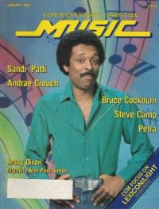

CMnexus
: Contemporary Christian culture, music, and media.
|
|
CCM, Jan 1982, vol. 4, iss. 7
| Cover |
|---|
|  | | Writers in this Issue |
|---|
Bagdon, Phillip
Baker, Paul
Burns, Carolyn A.
Healy, Brian
Heard, Mark
Moulton, Kelly
Pike, Lori E.
Platt, Karen Marie
Styll, John W.
Witty, John
Witty, VickiJo
|
Cover Feature:
- "Paul Simon's Hot Gospel Concert Guest Keeps Cool Christian Without Compromise" by Karen Marie Platt
Article:News Item:Records:
- "Getting Back to Basics With Steve Camp" by Paul Baker
- "Bruce Cockburn Goes A Little Deeper" by Lori E. Pike
- "Cockburn: Seeking The Human Level" by Mark Heard
Talent:What's New:In Concert:Rough Mix:
- "January Blues, or Post Christmas Fallout" by John Witty, VickiJo Witty
|
|